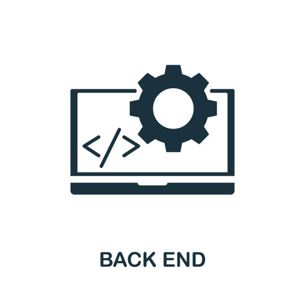

Skill-Set

GitHub is a platform for version control and collaboration, allowing developers to store, manage, and share code repositories effectively.

Encompasses the creation of websites and web applications, including both front-end (user interface) and back-end development.

Focuses on building and maintaining the server-side logic, databases, and APIs powering a web application.
Involves working independently on projects, offering specialized services to clients on a flexible and self-directed basis.